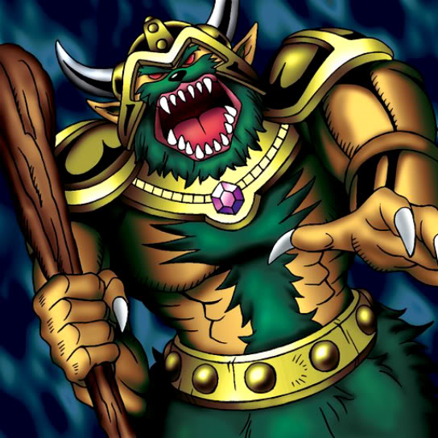

Mountain Warrior

Description: "When this card is flipped face-up, all monsters in MOUNTAIN terrain are increased 300 points."
STATS
ATK: 600
DEF: 1000DECK COST
Deck Cost per Card: 21EFFECT NOT IMPLEMENTED
Fusion List (2 Possible Fusions)
- Mountain Warrior + Dryad = Nekogal #2
- Mountain Warrior + Queen of Autumn Leaves = Nekogal #2